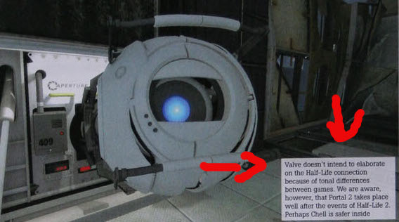

Not too long now (hopefully) to Portal 2 comes out. And i’m now going to be honest…the thing I want to see most in Portal 2 is something related to Half Life other than just Black Mesa spoken of. As Portal 2 is set hundreds of years in the future that obviously means the earth has been exploded. However if the arth is back to normal, why have no humans been back into the aperture labs? Or have they? Portal 2 could reveal more about what happens in episode 3 than we would’ve thought…not that much but obviously it could reveal some of what might’ve happened.
I’m pretty sure they’ve said there’s going to be no reference at all to HL in Portal 2.
Pics or it didn’t happen
Well considering the earth still has plant life we could assume the combine have been wiped out. That said the human population would still be tiny, and considering it took us thousands of years to populate and discover everything we have now it’d take any survivors ages.
That said Valve are clever enough to never actually say something, instead they just let the fans brood in their own minds.
Which in turn makes for awesome hype.
The only thing Valve ever need worry about is living up to it, which they have done, time and time again.
What?
Won’t happen.
It didn’t explode.
Because it’s under the earth and GLaDOS killed them all.
Won’t happen.

hasn’t* typo
And also Valve say a lot of things that they don’t end up keeping.
For instance not too long ago they were saying the Ps3 was like a nintendo gamecube. Now they love the PS3.
Just saying, what valve says doesn’t always stay that way
They now love PS3, because Sony reacted to their critics and worked a bit more on the PS3, that’s why steamfeatures are now possible on the PS3.
If you think about, what Valve said about the connection of Half Life and Portal, you should understand, that it was a good idea, that they won’t mention anything about Half Life in Portal anymore. To make it easier for you to understand: No one wants to play 2 games to understand the story of one game. There are Portal fans who don’t like Half Life, and Half Life fans who don’t like Portal. They don’t want to play the other game to understand what happens in the other. Period.
No one said to understand. Just to get a bit of a hint as to what happened. Like something to keep us occupied whilst they make episode 3.
Yeah, but then the nerds who only play half-life will bomb Newels house when they hear about HL story references in Portal. Then we won’t have Half Life 3, and the universe will cease to exist.
If there are any Aperture Science references to do with the story of Half-Life, they’l be in Half-Life.
That said I don’t mind both. Although I don’t think any references to Black Mesa would really fit in with Portal 2. Some destroyed Combine equipment would work, but still be completely out of place for Aperture Science labs.
Yeah, because we all need far more stuff to speculate about.sarcasm
toysy. Would I assume correctly if I thought that BlackMesa bible is photoshop in your sig?
If not, what is that book and where can I get it?
Fix’d
I can’t wait for Portal 2. The environments are what have me excited. It looks a lot more dynamic and adventurous than the first Portal, which made me feel trapped and claustrophobic. Although, I guess that’s how it’s supposed to make you feel. 
The enviroments do look awesome. I just hope valve don’t over do it and make aperture ridiculous…though I suppose as it’s been hundreds of years anything could happen
It comes out in February! 
[COLOR=‘Black’]Spoiler: It may not
The environment does look awesome, yes, but one thing that I’m most interested in seeing is how the Source Engine has been improved - Sure, we already know about dynamic shadows and liquids, but I wonder what else they’re going to add under the hood. Maybe leave in some experimental codes, like the black hole grenade that’s in EP1.
I’m wondering if you can still spawn HL2 monsters/weapons like you could in the first one.
Probably not considering it’s a new engine and everything. Though that does’nt change much, it’s still common knowledge that Valve is going all out on this game and that they would’nt have something like that in the game. This game will probably not even appear to be a source game it’s so new and different.